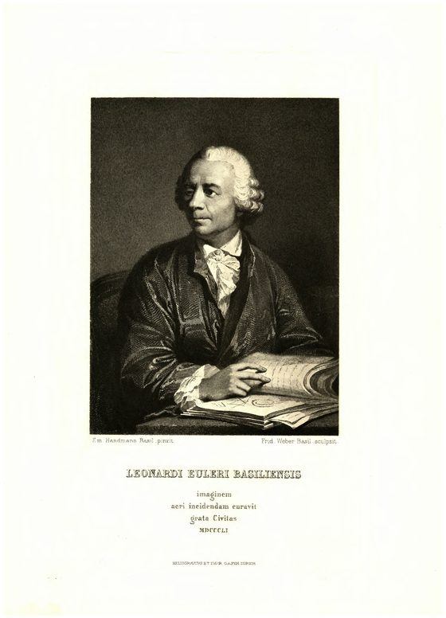
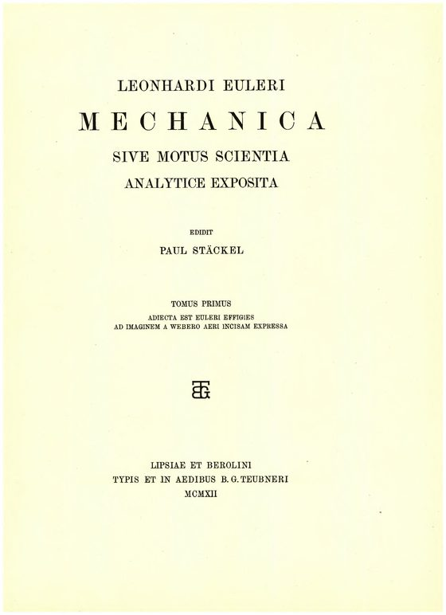
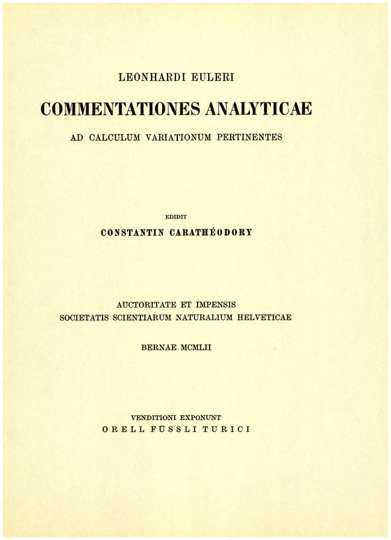
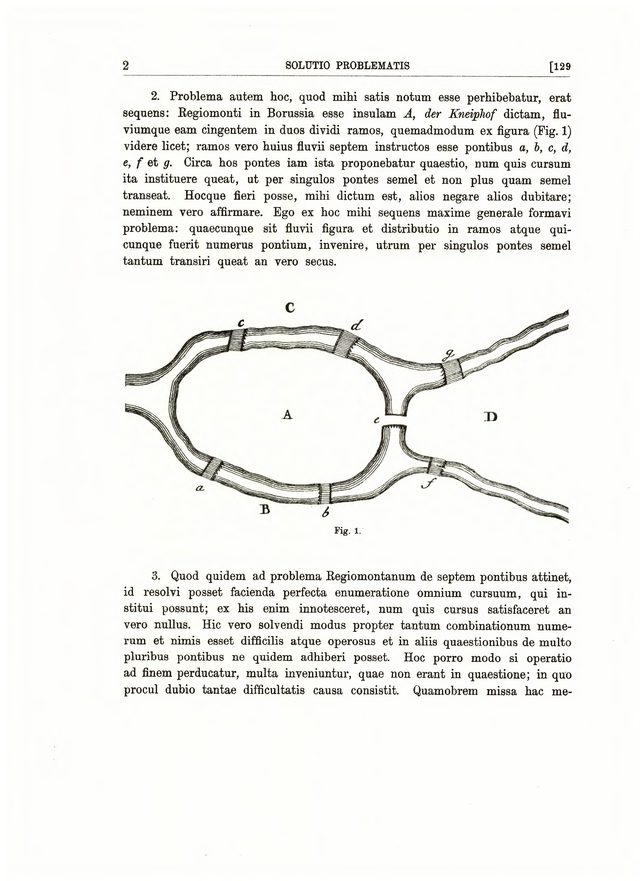
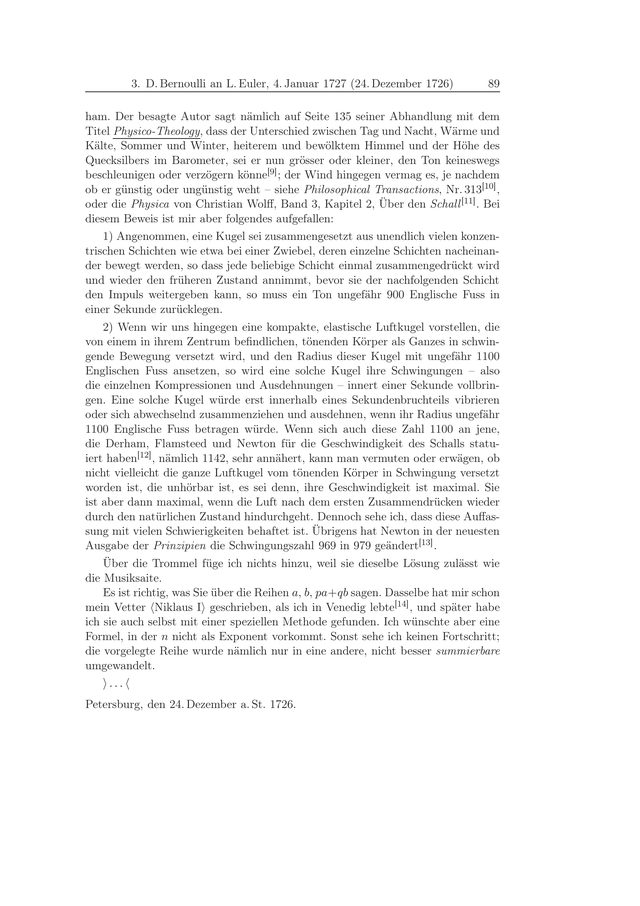
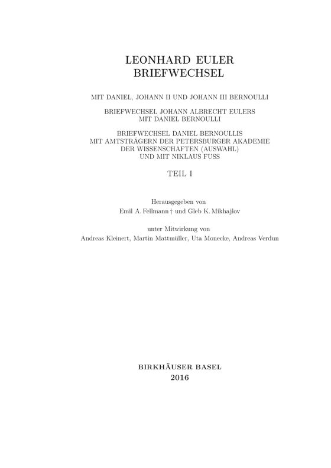

Erzählung
Der Bestand
Vier Reihen, 84 Bände: 30 zur Mathematik, 33 zu Mechanik und Astronomie, 13 zur Physik und 8 Bände des Briefwechsels. Die Erzählung zeigt Band für Band, wie viel Text vorliegt, und trennt, was gemessen ist, von dem, was fehlt.
Digitale Edition · Portal
Die Opera omnia Leonhard Eulers liegen in der PDAI als 84 Bände mit 41.219 Seiten vor, dazu das Eneström-Verzeichnis mit 866 Einträgen und der Briefwechsel der Reihe IVA. Diese Seite zeigt, was im Bestand vorhanden ist und wie er sich befragen lässt.
Grundlage sind die Bände der Leonhardi Euleri Opera omnia (Reihen I–IVA) und die Schriftennummern nach Eneström. Die Rechte liegen bei der Bernoulli-Euler-Gesellschaft, Basel.
Erzählung
Vier Reihen, 84 Bände: 30 zur Mathematik, 33 zu Mechanik und Astronomie, 13 zur Physik und 8 Bände des Briefwechsels. Die Erzählung zeigt Band für Band, wie viel Text vorliegt, und trennt, was gemessen ist, von dem, was fehlt.
Schriftenverzeichnis
Gustaf Eneström hat Eulers Schriften durchnummeriert. Das Verzeichnis der PDAI führt 866 Einträge, davon liegen 767 als Digitalisat vor.
Reihe IVA
Die kritischen Bände IV A 2 bis 8 verzeichnen 1.040 Briefe. Der Registerband ist ein erster Entwurf; maßgeblich ist der Stand der kritischen Edition.
Digitale Edition
Der Viewer zeigt jede Seite mit Faksimile und Transkription und lässt sich durchsuchen. Die Suche verbindet Lemmata, Personen und Orte über alle Bände.
Pilotdokument
Die Schrift E57 ist das Pilotdokument der strukturierten Erschließung: 106 Seiten, 8 Kapitel, 127 Lehrsätze und Aufgaben sowie 1.504 Formeln, gegliedert in 2.131 Sätze. Die Zahlen stammen aus dem Pilotbericht vom 23. April 2026 und sind nicht aus dem heutigen Index nachgerechnet.
Erläuterung des methodischen Ansatzes
Jede Zahl auf dieser Seite wird beim Bauen aus den Quellen gelesen: aus den bibliographischen Angaben der Bände, aus dem Register der Briefe und aus dem Eneström-Verzeichnis. Fehlt eine Quelle, bricht der Bau ab.
Die Quelle jeder Zahl steht im Datenmanifest am Ende der Seite.
Die Blätter stammen aus den Digitalisaten der PDAI. Ein Klick öffnet den jeweiligen Viewer.

Opera omnia II 1, FrontispizPorträt Eulers nach dem Stich von Bernigeroth (Leipzig 1744), Ausgabe Teubner 1912.
Opera omnia II 1, TitelblattMechanica sive motus scientia analytice exposita, herausgegeben von Paul Stäckel.
Opera omnia I 25, TitelblattCommentationes analyticae ad calculum variationum pertinentes, herausgegeben von Constantin Carathéodory, Bern 1952.
E53, Seite 1Solutio problematis ad geometriam situs pertinentis mit der Karte der sieben Königsberger Brücken.
Reihe IVA 3, Brief 2Daniel Bernoulli an Euler, Petersburg, 24. Dezember 1726 alten Stils.
Reihe IVA 3, TitelblattBriefwechsel mit Daniel, Johann II und Johann III Bernoulli, Birkhäuser 2016.Der Briefwechsel liegt in Bänden vor, die Seitenzahlen stammen aus dem Digitalisat.
Was diese Seite zeigt, stammt aus den folgenden Quellen.
Reihen I bis IVA. Herausgeber, Verlage und Erscheinungsjahre der einzelnen Bände stehen im Viewer.
Verzeichnis der Schriften Eulers nach Eneström; die PDAI führt es als bibliographische Datei.
Die Rechte liegen bei der Bernoulli-Euler-Gesellschaft, Basel.